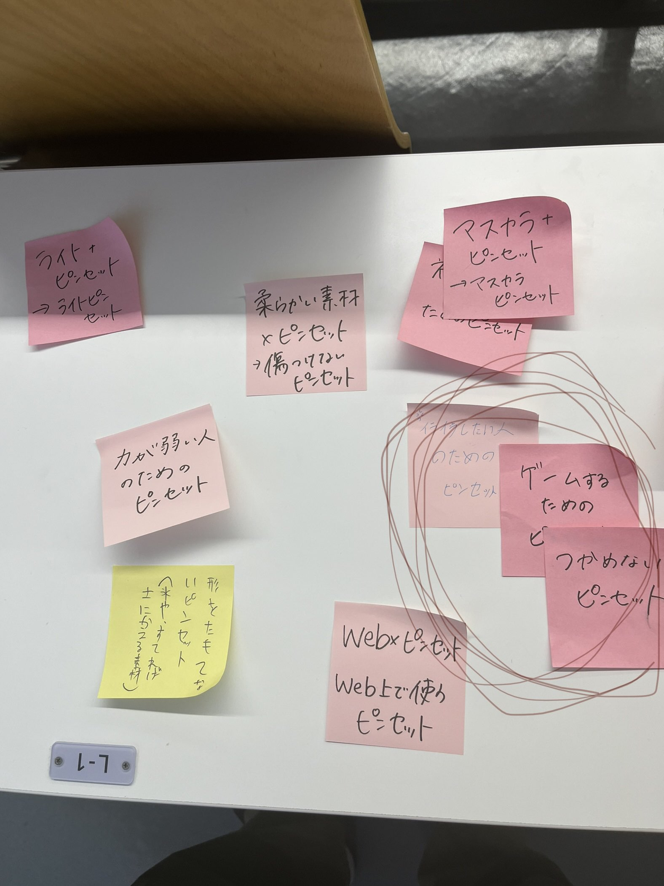

今日もかっちょいいアクセサリーBOX
アイデアの発想
ボードゲームなどによる、ピンセット本来の使い方が使いずらいが出来なくもない物を作るにあたり、 湾曲を連ねた形にすることで持ちにくさ、持ち上げにくさを再現しようとしました。作ろうとした理由の一つ、あえて使いにくく「イライラ」してしまうもの、という意味合いも込められたはず。

完成後のデザイン
湾曲部分のあしを接続するのが難しく、ジョイント部分を正方形に変えたりと試行錯誤した。
設計ファイル
フュージョン360設計図
エセ日本人のXBP